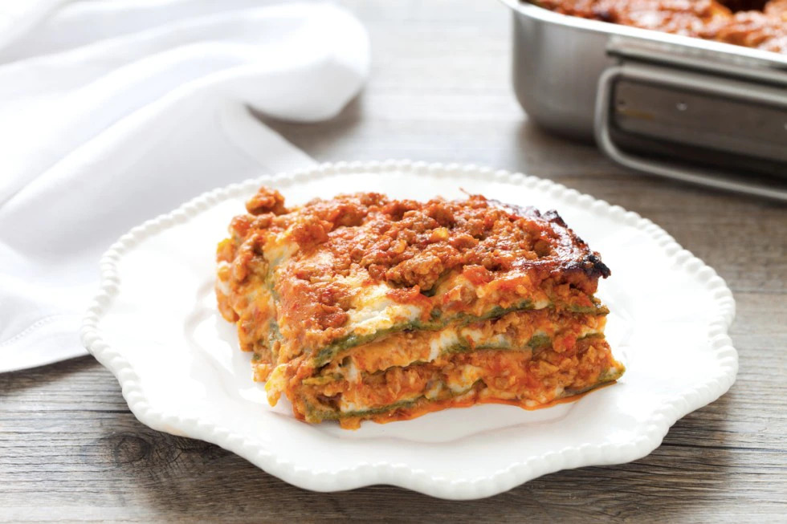

Lasagna Recipe

Description
This recipe is about a 100% Italian homemade lasagna, very few ingredients are needed to taste this fantastic dish
A lot people make lasagna everyday but I suffer everytime I see pizza with weird ingredients on it, this web-page recipe will help you to cook some very delicious lasagna
Ingredients
- Eggs 3
- Flour 350-400g
- Spinach 400g
- Bacon (150g)
- Mixed Minced Meat (700g Pork and Cow)
- Butter (90g)
- 1/2 glass of white wine
- Tomato Sauce (300g)
- Celery (1)
- Carrot (1)
- Onion (1)
- Tomato Concentrate (2 Spoons)
- Salt & Pepper
- 1,5 doses of bechamel
- Parmesan Cheese
- Some Pots
- Baking Sheet
Steps
- Warm up the oil and the butter in a pot, add the minced onion, mix it with the minced celery and the minced carrot, add the bacon and after a minute, your minced meat, keep on mixing it, when it change color throw some salt on it
- Pour some white wine on it and make it steam with it, add the tomato sauce and 2 spoons of Tomato Concentrate, mix it and wait for it for 2 hours
- In an anoter pot, put some Spinach with some warm water, put some salt on them and cook it, after that put them in the mixer and mince them, prepare the dough and put it in a plastic bag, wait for 1 hour
- Spread your dough on a table, and start to cut it with a knife in rectangles that will fit inside your baking sheet, put a big pot filled with water and heat it until it bubbles, cook one at a time all the dough rectangles that you' ve made before
- Put the first cooked rectangle dough in the baking sheet and put some of the tomato sauce with meat that we've prepared before and spread it all over the rectangle dough
- Do the 5 step like 5-6 time for some extra layers, then on the top layer put some parmesan cheese and put it in the oven for 45 minutes on 180 C, then put it out of the oven and serve it
- Taste your delicious lasagna with your family and friends!